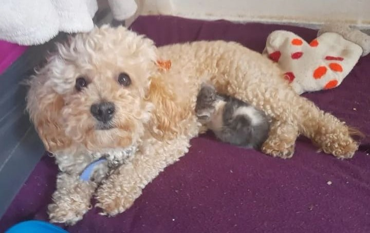

El es Negro, llego una noche de enero haciendose pasar por mi primo Rolo, yo lo olía y sabía que no era mi primo pero no dije nada porque me cayó bien. Luego de confirmar que no era Rolo y que era mucho más viejo y no encontrar a su familia, se unió a la nuestra. Se convirtió en mi mejor amigo y hacemos toooodo juntos.

Y por ultimo llego Barbarita, a ella mi mami la fue a buscar a la casa de una bruja que la tenia atada en su patio hacia varios años. Mi mami la baño, la despulgo y desparacito, se la llevaron como 3 familias y no quiso estar con ninguna porque mordia a sus mamis nuevas, asi que volvio con nosotros porque aca no muerde (seguro me extrañaba)